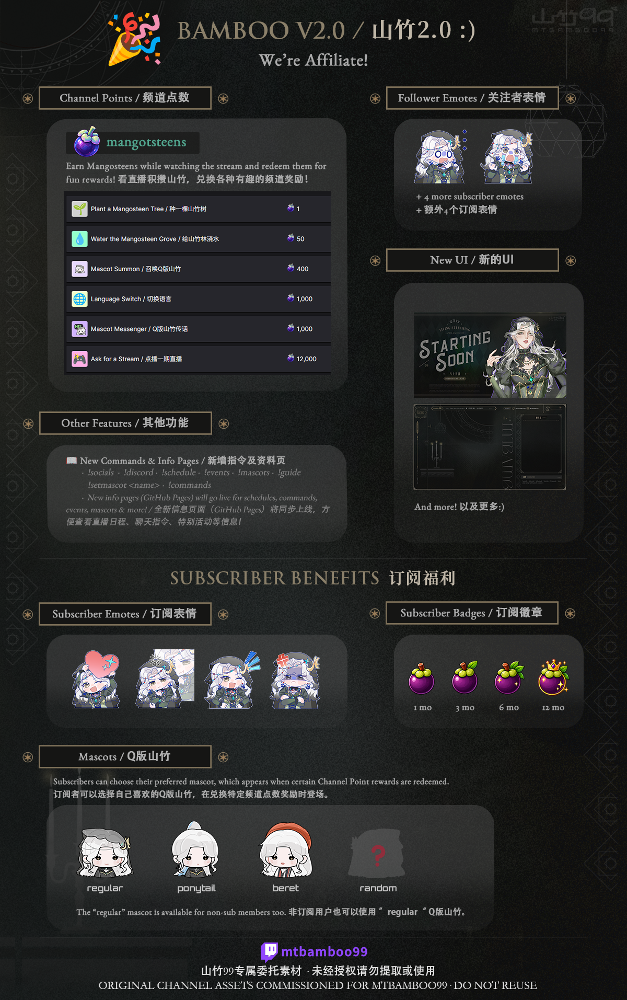

A quick guide to channel features, rewards, and subscriber benefits.
频道功能、频道点数奖励及订阅福利一览。

🌱 Channel Points / 频道点数
Earn Mangosteens by watching the stream and redeem them for fun rewards! Some rewards interact with mascots, messages, language, or future streams.
看直播即可获得山竹币，可用于兑换各种有趣的频道奖励！ 部分奖励可以召唤Q版山竹、发送传话、切换语言或点播未来的直播。
🎮 Ask for a Stream / 点播一期直播
Want to choose an upcoming stream? Check the available content, start times, and redemption guidelines.
想点播未来一期直播？ 可以在这里查看可点播内容、开播时间及相关说明。
View Stream Request Guide / 查看点播指南✨ Follower Emotes / 关注者表情
Two emotes are available to followers — no subscription required!
关注频道无需订阅即可使用2个关注者表情！
⭐ Subscriber Benefits / 订阅福利
Subscribers get ad-free viewing, unlock 4 more subscriber emotes, loyalty badges, and additional mascot choices.
订阅即可无广告看直播，解锁4个额外订阅表情、 订阅徽章及更多Q版山竹。
🌿 Mascots / Q版山竹
Certain Channel Point rewards summon a mascot. Subscribers can choose their preferred mascot; non-subscribers use the regular mascot.
部分频道点数奖励会召唤Q版山竹。 订阅者可以选择自己喜欢的Q版山竹； 非订阅用户则使用 regular Q版山竹。
View Mascot Gallery / 查看Q版山竹📺 Ads / 广告
Twitch’s default automatic ad schedule is too aggressive for my streams, so I have disabled Ads Manager. You may see a short pre-roll ad when you first join the stream (often around 30 seconds, but this can vary by region). During natural breaks—such as when I get water or use the bathroom—I may manually run a short ad. This temporarily disables pre-roll ads for new viewers. Otherwise, your viewing should generally not be interrupted by mid-roll ads after you join. If that isn’t your experience, please let me know!
Twitch 默认的自动广告频率对我的直播来说太离谱了，因此我关闭了 Ads Manager。第一次进入直播间时，你可能会看到一段较短的片头广告（通常是 30 秒左右，但可能因地区而异）。 直播过程中，如果我刚好需要接水、用卫生间，我可能会手动播放一段广告，这样可以暂时为之后进入直播间的观众关闭片头广告。除此之外，正常观看过程中一般不会被中途广告打断。 如果你的实际观看体验并非如此，请务必告知！
💬 Commands / 聊天指令
Check the full Twitch command list here for quick info access in chat.
在这里查看完整的Twitch聊天指令列表。
View Commands / 查看指令